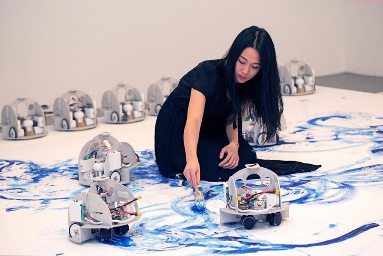

|
Sougwen Chung es una artista nacida en China, criada en Canadá y residente en Nueva York en la actualidad. Su arte es multidisciplinar de renombre internacional y explora los trazos hechos a mano y los trazos hechos a través de una máquina para entender la interacción entre los humanos y las computadoras. Su arte suele ir desde la instalación a la escultura, la imagen fija, el dibujo y la performance. Algo curioso de Sougwen es que es una antigua investigadora del MIT Media Lab (de ahí lo puntero de sus obras) y ha sido artista residente en Google, en la incubadora cultural del New Museum, en los Bell Labs y el New Museum of Contemporary Art de Nueva York. |
Sougwen Chung |
|
Desde luego, este arte en el que se interactua con robots es impresionante. Cualquiera diría que el arte hecho por un robot sería brusco, recto y demasiado preciso... pero eso queda bastante lejos de la realidad. Sougwen Chung colabora con robots desde 2015 y ha realizado, por ejemplo, la pintura de paisajes entre ella misma y un equipo de robots, o performances de dibujo improvisado con un brazo robótico que llamó DOUG... Chung está explorando el potencial de las máquinas para ser colaboradores artísticos y las formas en que los artistas pueden participar en el campo en rápido desarrollo del aprendizaje de las máquinas. El trabajo multidisciplinario de Sougwen ha sido exhibido internacionalmente, incluyendo el Museo de Arte Contemporáneo de Ginebra, el Nuevo Museo de Arte Contemporáneo de Nueva York, el Centro de Intercomunicación NTT (ICC) de Tokio y el Centro de Dibujo de Nueva York. Su trabajo ha sido presentado en The New Yorker, la BBC, The New York Times, Fast Company, Wired, Endgadget y USA Today. Como una de las artistas pioneras de su generación, el arte de Sougwen desafía la imaginación a través de su forma minimalista, con movimiento y con reflejos de la naturaleza. |
|